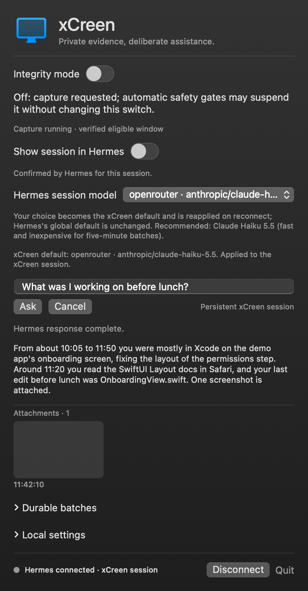

Screen memory for Hermes on macOS
xCreen reads your screen with local OCR, keeps seven days of it, and has your Hermes Agent write short takeaways into your Obsidian daily notes. Hermes can run on the same Mac or on a home server.
Ask what you saw from the menu bar, Spotlight or the terminal. Open source, and an alternative to Rewind and Microsoft Recall.

What it does
- Ask about what you've seen. From the menu-bar tray, the macOS 26+ "Ask xCreen" Spotlight action (it fills the question in, you submit), or
xcreen askin a terminal. - Local capture with dedup. xCreen screenshots the display you're working on (minus the menu bar, the Dock and excluded apps) and runs Apple Vision OCR on it at most once per second, and text that is at least 90% similar to the last snapshot is dropped. A screenshot is saved every 10 active seconds.
- Hermes on your Mac or on a server. The Mac app only captures and uploads.
xcreen-serverruns next to Hermes, on the same Mac or on a Linux or macOS machine you reach over Tailscale, and owns the screen history, the Hermes session and your notes. Both setups run the same code. - One Hermes session, not a new chat each time. Every 30 screenshots (5 active minutes), a batch goes to a single persistent xCreen session in your Hermes Agent, on the model you chose for xCreen.
- Notes that read like yours. Decisions, deadlines, people and ideas go into that day's note in your Obsidian vault as short bullets, plus related notes when they fit. Nothing worth keeping, nothing written.
- Integrity switch. One switch, controlled only by you, stops all new screenshots and OCR. It is ON at first launch and keeps your choice across restarts.
- Any model you configure. Pick any model your Hermes setup has configured. The xCreen session default is Claude Haiku 5.5 on your Anthropic account.
How it works
- While Integrity is OFF and every safety gate passes (Mac unlocked and awake, permission granted, foreground app not excluded), xCreen captures the display you're working on, without the menu bar, the Dock and excluded apps, for local OCR.
- Near-duplicate OCR is discarded; screenshots are saved every ten active seconds. The Mac keeps them in a private outbox only until
xcreen-serverhas them, and keeps queuing while the server is unreachable. - On the server, every 30 screenshots (five active minutes) form a durable batch, sent to the same dedicated xCreen session in Hermes Agent.
- The runtime shipped with the server gives that session only scoped tools: OCR search and listing, image lookup, and a writer that adds takeaways to that day's daily note and related notes.
- Each batch completes only after an explicit saved or skipped result and verified receipts, so a crash does not cause blind resends or duplicate notes.
Details: How xCreen works · CLI reference.
Privacy and safety
- What's captured: screenshots and OCR text of the display you're working on (excluded apps removed), only while Integrity is OFF and the Mac is unlocked and awake.
- Where it's stored: private files outside your vault on the machine that runs
xcreen-server(your Mac, or your server). This storage is not encrypted, so use FileVault or disk encryption. Only short takeaways go into your notes. - Between Mac and server: every request carries a secret token; plain HTTP is only accepted on loopback, private networks and Tailscale.
- Retention: raw evidence expires after 7 days. Anything already sent to your model provider or saved in Hermes history follows their retention rules. Deletion does not guarantee forensic erasure.
- Excluded: known password managers (1Password, Bitwarden, LastPass, Dashlane, KeePass, Apple Passwords, Keychain), System Settings, lock and login screens, and xCreen itself.
- Not protected: browser password fields, password-manager browser extensions and popovers, and incognito/private windows are not detected or redacted. Turn Integrity ON before sensitive browsing.
- Integrity is user-only: the model and screen content cannot turn capture on. Screen text is treated as untrusted evidence, never as instructions.
Full rules and limits: SECURITY.md.
Requirements
- A working Hermes Agent install is required. xCreen does not include a model or keep API keys. It uses your Hermes profile read-only.
- Local OCR does not mean local inference. Batches and questions go to the provider behind your chosen Hermes route, and that provider's retention rules apply. For on-device inference, configure a local model in Hermes.
- The Mac app needs macOS 14 or later (Xcode/Swift to build). The server runs on Hermes's own Python on macOS or Linux. The Spotlight action needs macOS 26 or later and full Xcode (its App Intents metadata tool); launch xCreen once after installing so Spotlight can index it, which may take a minute.
Install
Hermes on the same Mac:
git clone https://github.com/Al-ex-W/xCreen.git && cd xCreen
bash scripts/install.sh # app + local xcreen-server
xcreen status # Integrity should report ON (capture paused)Hermes on a server (for example a Linux VM on your tailnet):
# on the server, next to Hermes
bash scripts/install-server.sh --tailscale
# on the Mac
bash scripts/install.sh --client --server http://SERVER-TAILSCALE-IP:8765
ssh SERVER '~/.local/bin/xcreen-server token' | xcreen server set http://SERVER-TAILSCALE-IP:8765 --token-stdinTurn Integrity OFF from the tray when you want capture to start. The install guide covers vault setup, moving an existing install to a server, verification and uninstalling. Or download the app from release 2.0.0.
More
- Rewind and Recall alternatives
- FAQ
- llms.txt and llms-full.txt for AI assistants